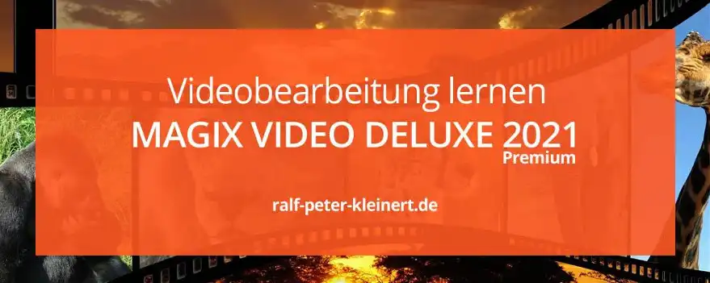
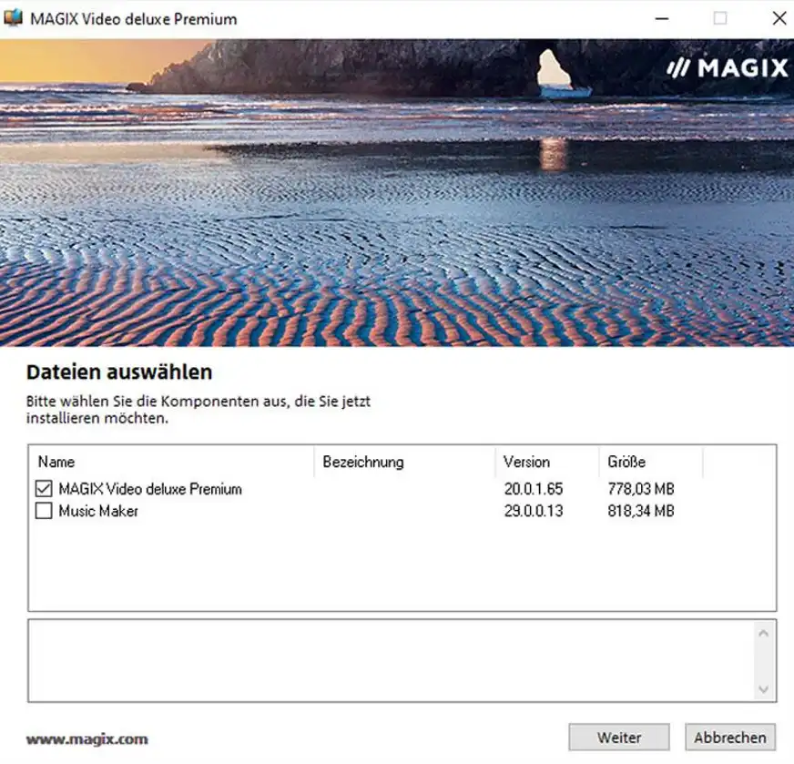
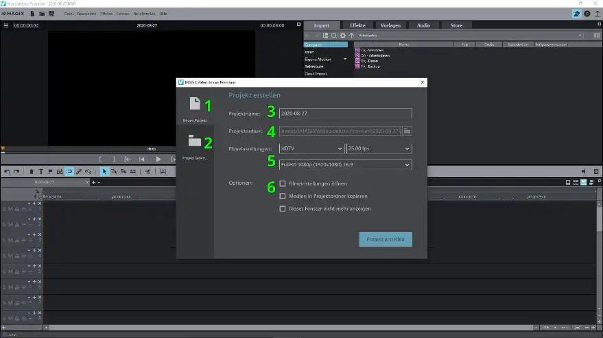
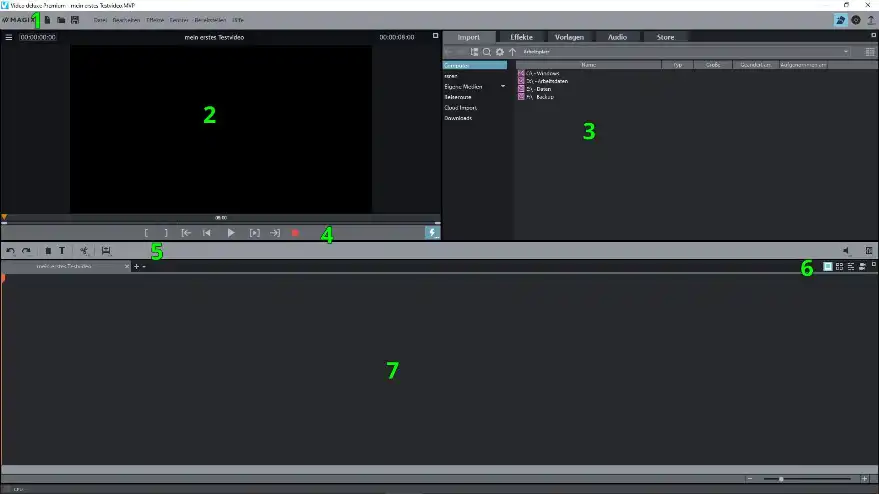
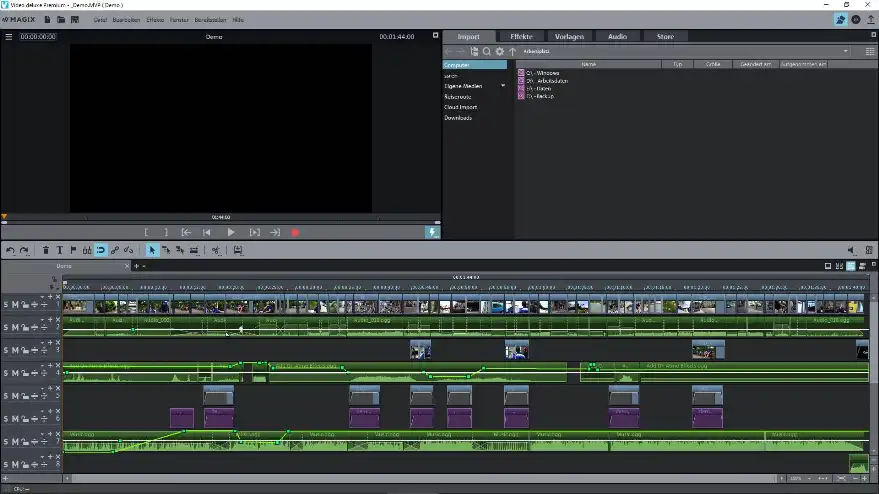

Videobearbeitung mit Magix Software lernen
Videobearbeitung lernen
- Videoschnitt Software kostenlos herunterladen
- Installation der kostenlosen Schnittsoftware
- Die Programm-Oberfläche von Magix Video Deluxe Premium
- Programmoberfläche - nach dem Dialog "Projekt erstellen"
- Zusammenfassung
Weiter
Übersicht
Kostenlose Videoschnittsoftware herunterladen
Ich arbeite mit Microsoft Windows 10, darauf basiert alles auf dieser Website.
Nachdem ich in den beiden vorangegangenen Artikeln ein wenig die Theorie zum Videoschnitt dargelegt hatte, kommen wir nun zur Videoschnitt-Software von Magix. Es gibt natürlich unzählige Programme zur Videobearbeitung. Sehr, sehr teure Programme und auch kostenlose Programme. Es ist alles dabei und auch alle Programme spucken am Ende irgendwann ein Video aus. Ich selbst habe in der Ausbildung auf Adobe Premiere Pro CS5 gelernt, doch diese Software ist jetzt nicht unbedingt dafür geeignet schnell und einfach Videobearbeitung zu lernen, wenn du damit ganz jung beginnen willst, zumal Premiere relativ kostspielig ist. Weiter nutze ich Davinci Resolve. Das Programm ist in der Grundausstattung kostenlos, aber wirklich nichts für den Anfänger.
Magix ist nicht kostenlos, aber für um die 100 € bekommst du ein voll ausgestattetes Videoschnittprogramm, dass keine Wünsche offen lässt und einen Support in Berlin, was eben auch manchmal sehr hilfreich sein kann. Der Clou ist, dass du dir vor dem Kauf die Software kostenlos herunterladen kannst und deine ersten Schritte im Videoschnitt demnach auch kostenlos erlernen kannst. Und hast du dir die Videobearbeitung mit Magix beigebogen, kannst du dieses Wissen natürlich auf andere Softwareprodukte übertragen, denn die Schaltflächen sind nach Standard und die Funktionsweisen der verschiedenen Programme anderer Hersteller sind sehr ähnlich.
Du kannst dir bei Magix alle Versionen kostenlos herunterladen und Testen. Das sind Magix Video Deluxe, Magix Video Deluxe Plus und Magix Video Deluxe Premium. Die Programme unterscheiden sich hier in der Ausstattung der Funktionen. Das Schneiden und Bearbeiten von Videos ist aber technisch gesehen gleich. Bist du nicht vollkommen verarmt und kannst dir später die Premiumversion für 129 € leisten, empfehle ich dir diese Version kostenlos herunterzuladen. Musst du wirklich sparsam sein und liebäugelst mit der Video Deluxe Version für 69,99 € lade dir diese kostenlose Testversion runter. Nicht, dass du sonst die eine oder andere Funktion vermisst. Ach was. Hol die Premium kostenlos und machs gleich vernünftig!
Software von Magix hier kostenlos hernunterladen:

Nachdem du dir nun den Installer für die kostenlose Video Deluxe Version deiner Wünsche heruntergeladen hast startest du das Tool durch doppelt draufklicken. Es öffnet sich der Downloadmanager von Magix. Hier kannst du nun Video Deluxe und den Musik Maker auswählen.

Lass zunächst nur Video Deluxe installieren, denn um dieses Programm dreht es sich doch. Du willst Videobearbeitung lernen und solltest es langsam angehen lassen. Verzichte zunächst auf den Music Maker, den kannst du immer noch später installieren. Zumal die Dateigrößen auch ziemlich anspruchsvoll sind. Das Installationsprogramm selbst erkläre ich jetzt hier nicht, denn es ist selbst erklärend. Ich gehe davon aus, dass du weißt wie man ein Programm installierst. Sollte ich allerdings falsch liegen, bitte gerne unten einen Kommentar dalassen und ich füge diese Infos noch hinzu.
Während der Installer sein Werk verichtet, kannst du dir das folgende Video ansehen. Diesen Film habe ich in Magix Video Deluxe Premium 2020 bearbeitet:
Du wirst im Internet immer für und wider und immer pro und kontra Stimmen finden. Der eine sagt "Magix ist toll" der andere sagt "Magix ist Müll". Du hast gerade das Video gesehen und ich sage "Den Zuschauer interessiert es nicht die Bohne!" Der Zuschauer will einen schönen Film sehen, mehr nicht. Ich erkläre hier Magix Video Deluxe. Ich arbeite gerne mit der Software und ich kenne mich soweit aus, dass ich mir erlauben kann zu sagen: "Es gibt für den Einsteiger nichts besseres!"
Die Programm-Oberfläche von Magix Video Deluxe Premium
Die Programmoberfäche zeigt sich nach dem Start in einem ansprechenden, dunklen Design. In der Standardeinstellung öffnet sich nach dem Starten der Software auch das Dialogfenster "Projekt Erstellen".

Tipp
In diesem Artikel gehen wir von Videomaterial mit einer Auflösung von: Full-HD (1080p, 1920px x 1080px, 25.00 fps) vom Android-Handy aus. Geht aber auch mit allen anderen FullHD-Cams.
Dialogfeld Projekt Erstellen
- Neues Projekt
- Projekt laden
- Projektname
- Projektordner
- Filmeinstellungen
- Optionen
1. Neues Projekt
Sofern du das Programm zum ersten mal öffnest, ist Neues Projekt bereitsausgewählt. Neues Projekt, wählst du immer, wenn du halt ein Neues Projekt, also einen neuen Film erstellen willst.
2. Projekt laden
Hast du schon einen Film bearbeitet und gespeichert, wird dieser unter Projekt laden ausgewählt. So kannst du jederzeit an deienen Filmen weiterarbeiten.
3. Projektname
Du solltest für jedes Projekt, also jeden Film einen gut überlegten Namen haben. Einmal um zu wissen worum sich dein Projekt handelt, auch wenn du mal ein paar Wochen oder Monate nicht daran arbeitest. Zum anderen, dass Zuschauer Lust auf deinen Film bekommen, wenn sie nur den Namen lesen.
4. Projektordner
Der Projektordner wird anhand deines Projektnamen erzeugt. Diesen Hauptordner kannst du in den Programmeinstellungen auswählen um ihn z.B. auf eine andere Festplatte auszulagern. Nach der Installation liegt der Ordner auf der Windowsfestplatte: dein ...\Ducuments\Magix\Video Deluxe Premium\"Projektname"\.
5. Filmeinstellungen
Hier kannst du verschiedene technische Einstellungen zu deinem Film auswählen. Zum Lernen wählen wir HDTV, 25.00 fps, FullHD 1080p, 16:9 aus. Das solltest du auf deiner Kamera, oder auf dem Handy auch einstellen. Dies dient vorerst dazu, dass wir die gleichen Voraussetzungen beim Lernen haben. Das Gefühl und das Wissen kommen nach und nach.
6. Optionen
Hier sind noch eimal feinere Optionen wählbar.
Filmeinstellungen öffnen: öffnet nach dem Klick auf Projekt erstellen ein weiteres Fenster. In dem Fenster kannst du dann nochmal die Auflösung, die Audioauflösung und weitere Details einstellen.
Medien in Projektordner kopieren: dient dazu, dass alle deine Medien, also Fotos, Videos und Audios sowie Grafiken in den Projektordner kopiert werden. Somit ist das ganze Filmprojekt in einem Ordner und transportabel. Oftmals nutzt man nämlich viele, viele Einzeldateien, die über den ganzen Rechner verteilt liegen. Das findest du nie wieder, wenn du nicht von vorn herein einen ordentlichen Projektordner hast. Klick es an.
Dieses Fenster nicht mehr anzeigen: Nicht anklicken. Wenn du die Software gut beherrschst, kannst du das irgendwann selbst entscheiden. Zum Lernen soll das Fenster immer kommen.
Wenn du einen Namen vergeben hast, z.B. "mein erstes Testvideo", stelltst du HDTV, 25.00 fps, FullHD 1080p ein und machst dann ein Häkchen bei "Medien in Projektordner kopieren". Nun auf: "Projekt erstellen" Button klicken. Dann sollte das Programmfenster so aussehen:
Programmoberfläche - nach dem Dialog "Projekt erstellen"

- Standard-Menüleiste
- Vorschaumonitor
- Datei-, Effekt- und Vorlagenmanager
- Vorschaumonitorschaltflächen, Transportkontrolle
- Werkzeugleiste
- Arranger- und Timlineansicht
- Arranger und Timline
1. Standard-Menüleiste
Diese Menüleiste kennst du sicher aus den meisten Windowsprogrammen. Auch im Videostudio gehört sie dazu. Hier findest du unter anderem "Neues Projekt", "Datei öffnen", "Speichern unter" oder die Speicherdiskette zum Schnellspeichern. Auch Magix Menüpunkte wie Effekte oder Fenster sind hier angesiedelt. Es macht hier wirklich Sinn alle Menüpunkte mit der Maus anzufahren und sich diese nach und nach einzuprägen. Du wirst mit der Zeit immer schneller die gewünschte Funktion finden und dein Gehirn lernt auch mit der Zeit diese Funktionen zu kombinieren - ganz allein. Du musst hier einfach nur ein wenig fleißig sein. Dann geht das ziemlich fix.
2. Vorschaumonitor
Im Vorschaumonitor werden deine Videos, Grafiken oder Bilder aus dem Datei-, Effekt- und Vorlagenmanager sowie die Viedeos und Dateien aus dem Arranger bzw. der Timline wiedergegeben. Dieser Monitor ist zum Sichten deines gesamten Materials innerhalb des Videostudios vorgesehen.
3. Datei-, Effekt-, Vorlagenmanager
In diesem Bereich kannst du deinen Computer nach Videomaterial, Fotos, Grafiken oder Audiodateien durchsuchen. Du kannst auch die Reiter: "Import", "Effekte", "Vorlagen", "Audio" und "Store" nutzen. Unter Import findest du Daten innerhalb deines Computers, unter Effekte, Vorlagen und Audio gibt dir Magix unheimlich viele Zusatztools an die Hand und unter Store kannst du bei Magix für recht kleines Geld zusätzliche Effekte, Vorlagen oder Sounds kaufen um deiner Kreativität so richtig einzuheizen. Wenn du dir hier mal ein bisschen Zeit nimmst und dir das alles mal zu gemüte führst, wist du sofort feststellen warum Magix Video Studio Deluxe Premium die bester Privatanwender Videoschnittsoftware der Welt ist! Das ist der Hammer, was du da ab 69.99 € alles bekommst. Da kann kein anderer Hersteller mithalten.
4. Vorschaumonitorschaltflächen, Transportkontrolle
Hier findest du den Playbutton, Sprungtasten und Recordbutton. Wie beim guten alten Videorecorder. Die Tasten helfen später auch bei Schnitt. Beschränken wir uns aber erst mal auf Play, Stop und Zurück. Kommt alles noch nach und nach. Der kleine Blau hinterlegte Blitz ist für Computer die nicht ganz so viele Mukkies haben. Aktivierst du diesen wird dein Videomaterial in der Qualität reduziert, sodass du flüssig arbeiten kannst. Die Ausgabe erfolgt auch bei aktiviertem Blitz in hoher Qualität.
5. Werkzeugleiste
Hier findest du verschiedenste Schnitt und Bearbeitungswerkzeuge. Diese Leiste ist recht flexibel. Hier im Screenshot zeigt sie 6 Werkzeuge. Man bekommt sie aber ganz gut gefüllt, wenn man die entsprechenden Einstellungen vornimmt. Später mehr dazu. Die angezeiten Werkzeuge reichen fürs erste.
6. Arranger- und Timlineansicht
Hier hast du 4 Schaltflächen. Von links nach rechts: Der Storyboardmodus: hier werden deine Dateien und Videoclips sehr übersichtlich in Form von großen Bildern angezeigt. Ich nutze diese Ansicht nie. Die Szenenübersicht: hier werden deine Videos nach Szenen sortiert angezeigt. Auch diese Ansicht nutze ich nicht. Der Timelinemodus: Alle Dateien, Musik, Fotos, Videos werden in Linenform dargestellt und hier hat man immer alle Dateien im Blick. Diese Ansicht nutze ich immer. Sie bietet mir den besten Überblich über Effekte, Videolänge, Übergänge oder Dateityp. Bei großen Projekten kann das von weitem unübersichtlich aussehen. Aber wenn du weißt was das alles bedeutet, findest du dich sehr schnell zurecht. Premium Version Schaltfläche 4: Multicammodus: Hier kannst du von mehreren Kameras aufgenommene Videos gleichzeitig schneiden und die Software achtet darauf, dass die verschiedenen Perspektiven zusammenpassen. Z.B. bei einem Konzert nimmt eine Kamera die ganze Band auf und eine zweite Kamera macht eine Nahe von der Sängerin. Das zusammenzuschneiden, wird hier sehr erleichtert.
Zusammenfassung
Du hast jetzt die Videobearbeitungs-Software von Magix kostenlos heruntergeladen oder gekauft. Du hast keinen Fehler gemacht! Ganz ehrlich. Auch hast du die Programmoberfläche im Groben erklärt bekommen. Aber halt - ich denke nicht, dass du jetzt schon der Hollywood Cutter Nr. One bist. Schau dir alles in Ruhe an - da haste erst mal genug zu tun. Nimm dir Zeit die Buttons, die Oberfläche und die Menüs kennen zu lernen. Das geht nicht von jetzt auf gleich! Kennenlernen heißt auch ganz explizit: Klicken, klicken und klicken, bis der Onkel Doktor kommt und deinen Zeigefinger verarzten muss. Drücke jeden Knopf. Mach die Maus kaputt!
Gehe in der "1. Standart-Menüleiste" auf: Datei > Neues Projekt > Projekt laden > Einführungsprojekt - und klicke, mache, tue. Zereiss das Projekt im Arranger, schiebe die Blöcke hin und her, Fass mit der Maus alle Punkte an, drücke alle Buttons, Knöpfe, + und - Schalter. Alles was man irgendwie klicken kann, klickst du an!
Einführungsprojekt, Demo:

Wenn irgendwas nicht so läuft. Wenn was gar nicht funktioniert. Schreibe gerne einen Kommentar. Bis ich antworte, klickst du erst mal bis der Arzt kommt - dann wird das!